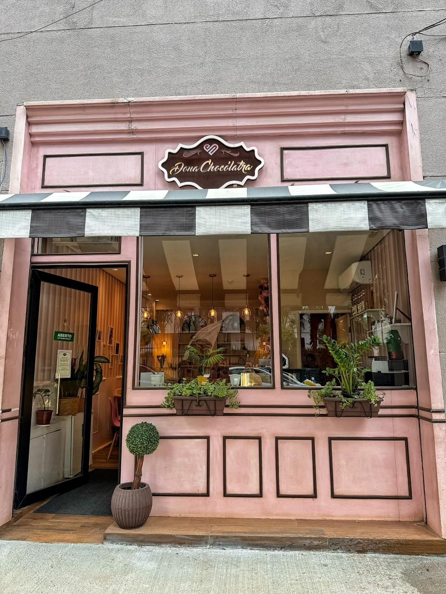
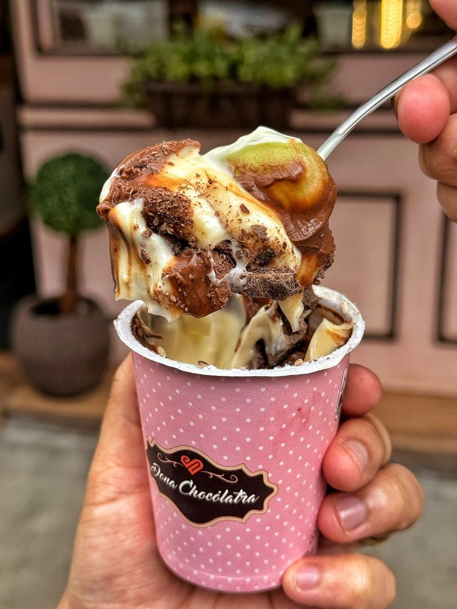
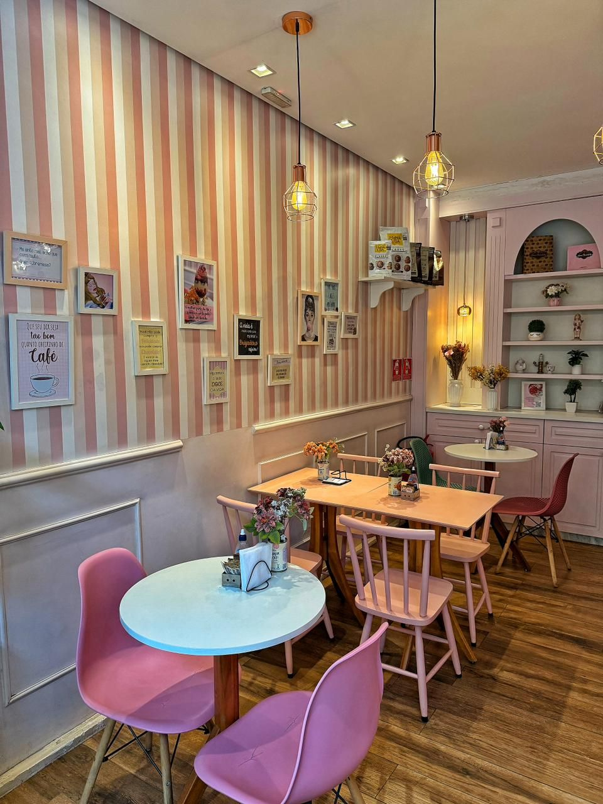

- Para comer na loja ou levar
- Brigadeiro belga, bolos e tortinhas
- Pix, dinheiro, crédito e débito
- R. Joaquim Távora, 569 · Vila Mariana
Doces de chocolate para comer com calma, em Vila Mariana
Brigadeiro belga, bolo de pote, fatias e tortinhas em uma confeitaria de bairro feita para sentar, conversar e aproveitar. A Dona Chocólatra recebe você na Rua Joaquim Távora.
Destaques
O que você encontra na Dona Chocólatra
Brigadeiro belga
Docinhos feitos com chocolate belga, para provar na hora ou levar.
Bolo de pote, fatias e tortinhas
Uma vitrine variada para quem quer um doce no capricho.
Para sentar com calma
Uma confeitaria de bairro com mesas para aproveitar o doce sem pressa.
Atendimento pelo WhatsApp
Tire dúvidas e consulte a vitrine do dia direto com a equipe.
Cardápio Cardápio simulado
Cardápio
Uma amostra do que pode estar na vitrine da Dona Chocólatra. Para o cardápio do dia e os valores, fale com a equipe.
CARDÁPIO SIMULADO — itens ilustrativos. Este cardápio foi criado apenas para a prévia do site. Os itens são ilustrativos e serão confirmados com a Dona Chocólatra antes da publicação. Valores e cardápio atual: consulte por telefone ou WhatsApp.
Brigadeiros Simulado3 itens
- Brigadeiro belga tradicionalChocolate belga ao leite com granulado
- Brigadeiro belga meio amargoSabor intenso, para quem gosta de cacau
- Brigadeiro do diaSabor da vitrine — consulte a equipe
Bolos de pote Simulado3 itens
- Bolo de pote de chocolateCamadas de massa de chocolate e creme
- Bolo de pote de dois chocolatesCreme de chocolate ao leite e chocolate branco
- Bolo de pote do diaSabor da semana — consulte a vitrine
Fatias e tortinhas Simulado3 itens
- Fatia de bolo de chocolateMassa úmida com recheio cremoso
- Tortinha de chocolateBase crocante e ganache
- Tortinha do diaCriação da semana — consulte a equipe
Para acompanhar Simulado2 itens
- Café espressoCafé curto para acompanhar o doce
- Chocolate quenteBebida cremosa de chocolate


Sobre
Sobre a Dona Chocólatra
A Dona Chocólatra é uma confeitaria de bairro em Vila Mariana, São Paulo. O convite é simples: sentar e comer um doce com calma. Na vitrine, brigadeiro belga, bolo de pote, fatias e tortinhas, preparados para quem gosta de chocolate de verdade — para saborear em um ambiente aconchegante na Rua Joaquim Távora ou levar para quem você gosta.
Uma pausa doce no meio do dia.
Pedidos
Na loja ou para levar
Passe na Dona Chocólatra, na Rua Joaquim Távora, para escolher seu doce na vitrine e aproveitar com calma, ou leve para casa. Para tirar dúvidas e consultar o cardápio do dia, chame no WhatsApp.
Chame no WhatsApp ou ligue para (11) 96576-1515.
Conte o que você procura — brigadeiros, bolos de pote, fatias ou tortinhas.
Combine os detalhes com a equipe.
- Entrega e encomendas
- Consulte pelo WhatsApp
4,8 no Google · 139 avaliações
Conte como foi o seu doce
Já passou pela Dona Chocólatra? Sua avaliação no Google ajuda outras pessoas a nos conhecer e nos ajuda a receber cada vez melhor.
Avaliar no GoogleContato
Onde estamos
Horário
Fale com a gente
- WhatsApp: (11) 96576-1515
- Telefone: (11) 96576-1515
- Instagram: @donachocolatra
Que tal um doce hoje?
Brigadeiro belga, bolo de pote, fatias e tortinhas, na Rua Joaquim Távora, em Vila Mariana. Venha nos visitar ou fale com a Dona Chocólatra pelo WhatsApp.